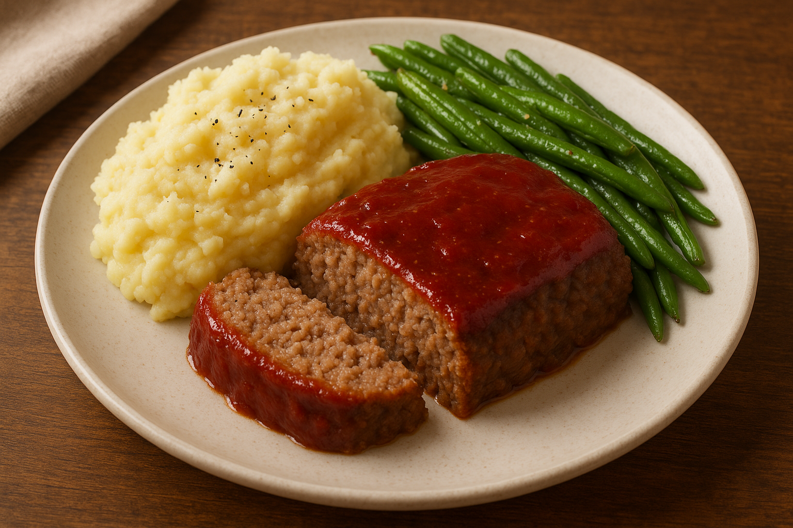

All-American Meatloaf
Developed by Forrest White & Cook Anything Kitchen
Recommended Tools
As an Amazon Affiliate I earn from qualifying purchases.
- Large Mixing Bowl (mixing the meatloaf ingredients)
- Loaf Pan (shaping and baking the meatloaf)
- Silicone Spatula (mixing and smoothing ingredients)
- Measuring Cups (measuring liquids and breadcrumbs) and Measuring Spoons (measuring seasonings and sauces)
- Meat Thermometer (checking internal temperature)
- Large Stock Pot (boiling the potatoes)
- Colander (draining the boiled potatoes)
- Potato Ricer (mashing the potatoes) — This piece of equipment makes the most consistent mashed potatoes ever!
- Small Saucepan (warming milk and butter)
- Skillet (sautéing green beans) — This is a great entry level pan that will last a few years.
- Wooden Spoon (stirring the green beans)
- Chef’s Knife (slicing the meatloaf)
- Cutting Board (resting and slicing the meatloaf)
- Serving Platter (presenting the finished dish)
Ingredients
For the Meatloaf:
- 2 lbs ground beef (or a mix of beef and pork)
- 1 cup breadcrumbs
- 1 small onion, finely chopped
- 2 cloves garlic, minced
- 1/2 cup milk
- 2 large eggs
- 1/4 cup ketchup (plus extra for topping)
- 2 tsp Worcestershire sauce
- 1 tsp salt
- 1/2 tsp black pepper
- 1/2 tsp paprika
For the Glaze:
- 1/2 cup ketchup
- 2 tbsp brown sugar
- 1 tsp mustard
For the Mashed Potatoes:
- 3 lbs potatoes, peeled and chopped
- 1/2 cup milk
- 1/4 cup butter
- Salt & pepper, to taste
For the Green Beans:
- 1 lb fresh green beans, trimmed
- 2 tbsp butter
- 2 cloves garlic, minced
- Salt & pepper
Directions
- Preheat oven to 350°F (175°C).
- In a large bowl, combine ground meat, breadcrumbs, chopped onion, garlic, milk, eggs, ketchup, Worcestershire sauce, salt, pepper, and paprika. Mix until just combined.
- Shape mixture into a loaf and place in a greased 9x5-inch loaf pan or on a baking sheet.
- Mix ketchup, brown sugar, and mustard.
- Spread evenly over the top of the meatloaf.
- Bake for 60–70 minutes, or until internal temperature reaches 160°F (71°C). Let rest 10 minutes before slicing.
- Boil potatoes in salted water until tender, about 15–20 minutes.
- Drain and mash with butter and milk. Season with salt and pepper.
- In a skillet, melt butter over medium heat.
- Add garlic and sauté 1 minute.
- Add green beans, salt, and pepper, sauté until tender-crisp, about 5–7 minutes.
- Slice meatloaf and serve with a generous scoop of mashed potatoes and green beans on the side.
Nutrition
Serving Size: 6 servings (meatloaf, mashed potatoes, and green beans)
Calories: 640
Fat: 36 g
Carbs: 38 g
Protein: 39 g